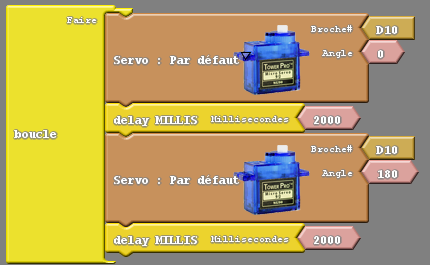

ACTIVITĒ 4
Exercices sur l'utilisation du Servomoteur
Câbler le servomoteur SG90 sur la carte I/O sur le connecteur servo, - : fil noir (ou marron) , + : fil rouge, Sig : fil orange (ou blanc)
Exercice 4A
Objectif
Faire tourner alternativement et en boucle le servomoteur de 180° toutes les 2 secondes.
Attention : il existe un autre bloc avec la même photo nommé « Rotation du moteur de 360°» ne pas le prendre car ce servomoteur a une amplitude angulaire maximale de 180°.
Réaliser le programme ArduBlock ci-dessous :

Attention : saisir des valeurs comprises entre 0° et 180° uniquement.
Enregistrer le programme ArduBlock sous le nom Exercice4A_votrenomdegroupe.
Transférer le programme et vérifier qu'il fonctionne correctement.
Questions à répondre sur copie pour l'Exercice 4A.
Q14) En regardant le programme en C généré, identifier toutes les instructions et tous les éléments en langage C, nécessaires au fonctionnement du servomoteur.
Q15) Expliquer le rôle et le paramétrage des instructions suivantes :
a) #include
b) Servo
c) attach()
d) write()
Pour comprendre ces instructions et les commenter, vous pouvez consulter le guide de référence du langage Arduino.
Exercice 4B
Objectif
Modifier le programme ArduBlock 4A de telle façon que le servomoteur se déplace vers la position 0° lorsqu'on appuie sur Bouton Poussoir rouge, et qu'il se déplace vers la position 180° lorsqu'on appuie sur Bouton Poussoir vert.
Si Bouton Poussoir rouge est actionné, la LED rouge s'allume pour indiquer que c'est la position 0° qui a été choisie.
Si Bouton Poussoir vert est actionné, la LED verte s'allume pour indiquer que c'est la position 180° qui a été choisie.
Si la LED verte est allumée, alors la LED rouge doit être éteinte et vice versa.
Enregistrer le programme ArduBlock sous le nom de fichier Exercice4B_votrenomdegroupe.
Vérifier qu'il fonctionne correctement.
Exercice 4C
Objectif
Modifier le programme ArduBlock 4B de telle façon que le servomoteur se déplace de 10° à chaque fois que l'on appuie sur Bouton Poussoir rouge.
Lorsqu'on arrive à la position 180° le servomoteur ne se déplace plus même si on appuie sur Bouton Poussoir rouge.
Pour revenir à la position 0° on doit appuyer sur Bouton Poussoir vert. De plus, si on appuie sur Bouton Poussoir vert à tout moment quelle que soit la position du servomoteur, il retournera à la position 0°.
Pour indiquer visuellement la position du servomoteur on utilisera les 3 LEDs de la façon suivante :
• Lorsque le servomoteur est à la position 0°, seule la LED rouge est allumée.
• Lorsque le servomoteur est à la position 180°, seule la LED verte est allumée.
• Lorsque le servomoteur est à la position 90°, seule la LED jaune est allumée.
• Lorsque le servomoteur se situe entre la position 0° et 90°, seules les LEDs rouge et jaune sont allumées.
• Lorsque le servomoteur se situe entre la position 90° et 180°, seules les LEDs jaune et verte sont allumées.
Conseil : Pour simplifier la structure et la lecture du programme, utiliser plusieurs "sous-programmes" pour :
• déplacer le servomoteur.
• allumer la LED rouge uniquement
• allumer la LED verte uniquement
• allumer la LED jaune uniquement
• allumer les LEDs rouge et jaune uniquement
• allumer les LEDs jaune et verte uniquement
Enregistrer le programme ArduBlock sous le nom de fichier Exercice4C_votrenomdegroupe.
Vérifier qu'il fonctionne correctement.
Fin de l'activité 4 sur l'utilisation du servomoteur, vous pouvez passer à l'activité suivante : Activité 5 sur l'utilisation du potentiomètre.
Créé avec HelpNDoc Personal Edition: Créer des livres électroniques facilement